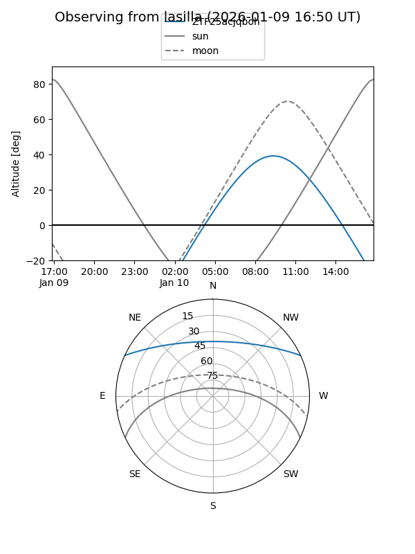

ZTF25acjqboh
Target ZTF25acjqboh at 2025-12-21 12:22
Aliases and brokers:
FINK: fink-portal.org/ZTF25acjqboh
Lasair: lasair-ztf.lsst.ac.uk/objects/ZTF25acjqboh
ALeRCE: alerce.online/object/ZTF25acjqboh
alt names
ZTF25acjqboh (ztf,fink_ztf)
Coordinates:
equatorial (ra, dec) = 179.3150,+21.61290
equatorial (HMS+DMS) = 11:57:15.60,+21:36:46.43
galactic (l, b) = (234.1019,+76.49724)
Flags:
Photometry:
last ztfg=20.39
1 ztfg detections
Lightcurve

Visibility


Additional plots